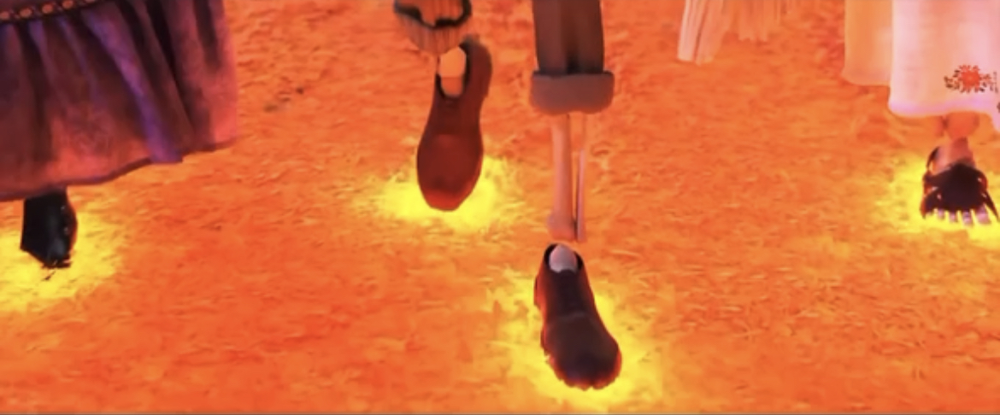

Introduction
The yellow light is used to build the output device, and then the sound sensor is used as the input. When talking to the device, the yellow light will light up with the sound waves, which means talking to people in the world of the dead and expressing my misses. When I get up and leave, away from the device, the light will no longer be on, punctuating the theme "Death is not the end, forgetting is."
Concept and Background Research
There is this passage in David Eagleman's Sum: Forty Tales from the Afterlives: In one's life, one dies three times. The first time, when your heart stops beating and your breathing dies, you are biologically declared dead; the second time, when you are buried and people attend your funeral in black, they declare that you no longer exist in this society and you pass away quietly; the third death is when the last person in the world who remembers you, forgets you, and so you truly die. The whole universe will no longer be relevant to you. In life, there is always birth, old age, sickness and death, and time takes away many things. People who were once within reach may one day suddenly disappear, never to be seen again. So when faced with this, one always falls into a downward spiral of emotions. But life still has to move on and look forward, so I wanted to make a device to remove the fear of death, to dissolve the grief of the passing of a loved one, and to allow the thoughts to give the deceased a presence beyond time.
I took inspiration from the movie coco. Every year on the Day of the Dead, a passage opens between the human world and the world of the dead, a bridge made of chrysanthemum petals, from which the souls of the dead from the world of the dead can visit their loved ones in the land of the living, a bridge between the two worlds. When they put their feet on it, it glows. Therefore, I wanted to make an installation where the human world talks to the world of the dead, allowing people to express their thoughts and remembrance of their deceased friends and relatives.
As my gap year was experiencing the deaths of two of the most important people in my life, my grandfather and grandmother, I missed them beyond words. During the days of my grandfather's funeral, I had been watching
Technical Implementation
Use yellow lights (2 WS2811 Pixels Digital Addressable LED String Lights) to build the output device and cover it with a few chrysanthemums. The flower language of the yellow chrysanthemum is a miss. It can represent a feeling of missing a friend or relative, or a sorrowful mourning for someone who has passed away. The sound sensor then acts as an input and when talking to the device, the yellow light will light up with the sound waves, signifying a conversation with someone in the world of the dead and expressing one's missing. When I get up to leave and move away from the device, the light will no longer be on, punctuating the theme "Death is not the end, forgetting is.